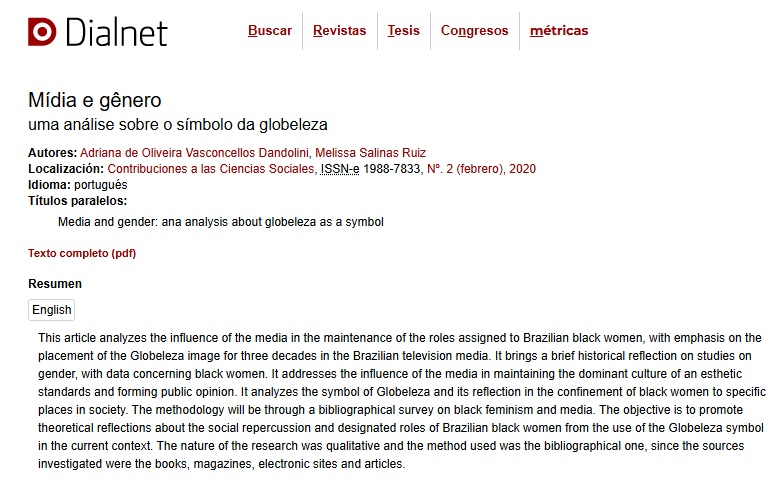

Embora todas as produções teórica requeiram um grau elevado de empenho e dedicação, inevitavelmente algumas produções se destacam mais do que outras. Seja pela possibilidade de abordar um tema há muito desejado ou pelo impacto em outros trabalhos acadêmicos, nesta seção trago os trabalhos que considero mais relevantes na minha trajetória.
Elaborado para uma disciplina do doutorado, o artigo levou a mim e à coautora a dar entrevista para jornais de alta circulação e para acadêmicas do curso de Jornalismo da USP. Conheça o texto clicando aqui
Além de ser um de meus trabalhos mais referenciados - citado em ebooks, em dissertação da UFPEL, em monografia da UFAL, entre outros - possibilitou que me debruçasse sobre um tema bastante atual e considerado polêmico por muitos. Acesse o artigo aqui
Sempre fui entusiasta da literatura! Neste artigo pude discutir acerca da percepção da masculinidade presente na obra "Boy Erased:uma verdade anulada" a partir de uma abordagem interdisciplinar. Leia aqui